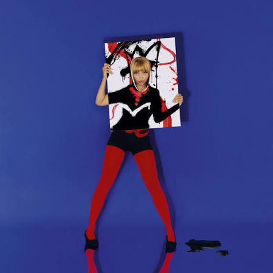
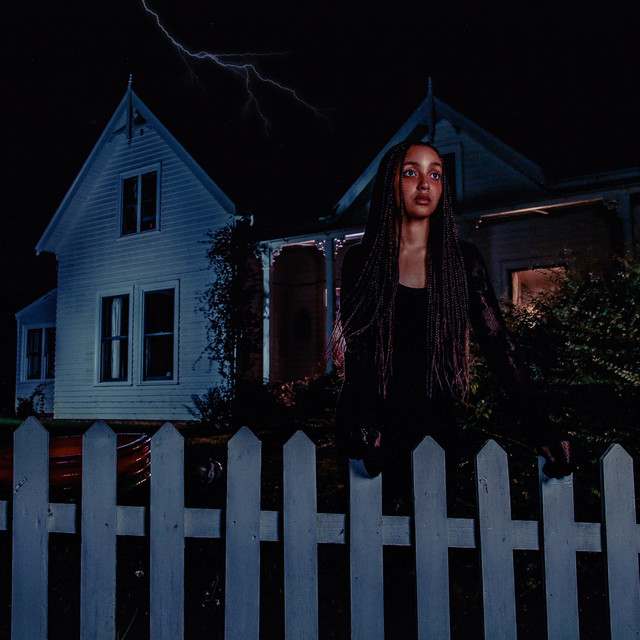

Страна: Великобритания
Жанр: Электронная музыка
PinkPantheress — британская певица, автор песен и музыкальный продюсер, родившаяся в 2001 году в Англии. Широкую известность получила в 2021 году благодаря публикации коротких музыкальных отрывков в TikTok. Её песни «Pain» и «Break It Off» быстро стали популярными.
Музыка PinkPantheress сочетает UK garage, drum and bass и поп-музыку. Её творчество отличается короткими композициями, использованием семплов из музыки 1990-х и 2000-х годов, мягким вокалом и ностальгическим звучанием.

Альбом ремиксов, выпущенный 10 октября 2025 года как расширенная версия микстейпа «Fancy That». В записи приняли участие Zara Larsson, Kylie Minogue, SEVENTEEN, Anitta и другие исполнители. Композиции получили новое звучание, сочетающее поп-музыку и электронные жанры.
Известные композици:

Второй микстейп PinkPantheress, выпущенный 9 мая 2025 года. Состоит из девяти композиций, вдохновлённых британской танцевальной музыкой и звучанием 2000-х годов. В релизе сочетаются UK garage, электронная музыка и поп.
Известные композици:

Дебютный микстейп PinkPantheress, вышедший 15 октября 2021 года. Содержит десять коротких композиций, сочетающих drum and bass, UK garage и поп-музыку. Именно этот релиз закрепил успех певицы после популярности её первых песен в TikTok.
Известные композици: